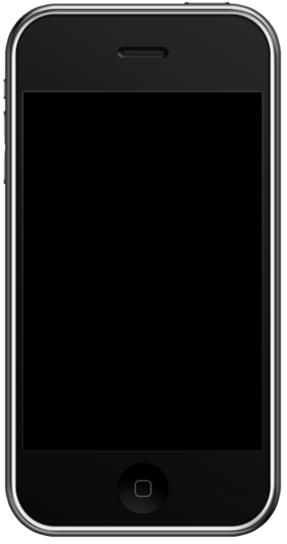

|
главная |
|
iphone 4/4s |
iphone 5 |
iphone 5c/5s |
iPhone 6/6+ |
iPhone 6S/6S+ |
iPhone SE |
iPhone 7/7+ |
iPhone 8 |
iPhone X |
iPhone XS |
iPhone 3g
iPhone 3G — смартфон, разработанный корпорацией Apple. Является преемником iPhone и предшественником iPhone 3GS. Представлен в июне 2008 года на WWDC 2008 в Moscone Center в Сан-Франциско. В отличие от первого iPhone, он поддерживает стандарты UMTS, HSDPA и A-GPS. Кроме того, был анонсирован App Store с поддержкой приложений сторонних производителей. Камера не претерпела улучшений и не получила поддержку видео-съёмки. iPhone 3G был выпущен 11 июля 2008 года в 22 странах мира в белом и чёрном цвете со встроенной памятью в размере 8GB и 16GB .Когда был выпущен iPhone 3GS, цена 3G упала вдвое, он стоил 99$ и продавался только в чёрном цвете с 8GB встроенной памяти и обновлённой версией iPhone OS 3.0. 7 июня 2010 года, после выпуска iPhone 4, iPhone 3G был исключён из продажи. На место ему пришёл iPhone 3GS за 99$ в такой же комплектации.
Задняя сторона iPhone 3G сделана из переработанного поликарбонатного пластика на замену алюминию в первом поколении.Кнопки сделаны из пластика и металла. Края телефона закруглённые, для удобства держания в руке. Размеры iPhone 3G немного больше чем у его предшественника: 115,5x62,1x12,3 мм.
Последняя доступная версия программного обеспечения — iOS 4.2.1. 11 марта 2011 года вышла iOS 4.3, которая не поддерживается iPhone 3G.
IPhone 3GS стал доступен для предварительного заказа 8 июня 2009 года. 19 июня 2009 года состоялся релиз в Канаде, Соединенных Штатах и 7 европейских странах, 26 июня также вышел в Австралии и Великобритании. В первую неделю после выпуска, было продано более одного миллиона 3GS. В июле и августе 2009 года iPhone 3GS вышел на международном уровне.